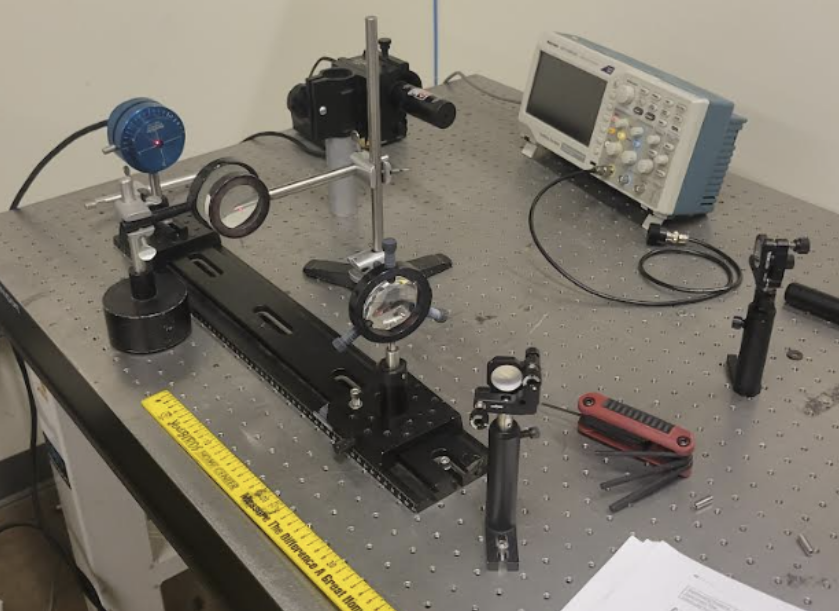

Portfolio
Selected technical projects and research.
These projects span robotics, controls, experimentation, optics, and autonomous systems.

RoboJeep
RoboJeep was a UCSD MAE 148 final project focused on converting a prebuilt children's ride-on vehicle into a reusable ROS 2 electromechanical platform for future controls and autonomy projects.
I designed and integrated 3D-printed custom mounts to secure the Jetson Nano, Arduinos, H-bridges, and sensors into the vehicle, helping turn the stock toy car into a more robust robotics testbed.
I also constructed and launched a Dockerized ROS 2 workspace, integrated serial bridges to the Arduino controllers for real-time vehicle control and debugging, and supported closed-loop steering, skid-steer operation, and low-level drive command execution.
On the sensing and validation side, I procured and integrated AS5600 magnetic encoders across all four drive motors, characterized encoder performance up to 9,600 RPM, and validated behavior by confirming the expected linear relationship between applied voltage and angular speed. I also helped incorporate a hardware fail-safe E-stop that disables the 5V enable signal to every motor driver for safer operation.

Instron Mechanical Testing
Designed ASTM D638-compliant experiments and developed MATLAB-based data analysis pipelines to extract elastic moduli.
Mini Autonomous Car
Integrated an OAK-D Lite camera and GNSS receiver into a perception pipeline using YOLOv8 models and PID position control.

Laser Lab Research
In Laser Lab, I worked hands-on with solid-state laser systems, using a laser pump, HR and OC optics, and precision alignment methods to create and optimize a high-power laser resonant cavity.
I aligned beams through an X-Y mirror setup, measured polarization ratios using polarizers and optical detectors, and performed beam profiling to evaluate diameter, divergence, and beam quality. I also operated Shimadzu spectrometers and oscilloscopes to capture spectral behavior, transmission properties, and pulse-related measurements across the optical setup.
Beyond running the experiments, I documented factory-style test procedures for crystal spectrum scans, mirror spectrographs, resonant cavity alignment, power optimization, and beam collimation. That work required careful optical alignment, wavelength-based analysis of crystals and mirrors, and repeated adjustment of the HR and OC mirrors to maximize output power while maintaining safe lab operation.
Controls Coursework
Designed full-state feedback controllers for an inverted pendulum and implemented a Luenberger observer to estimate unmeasured states.